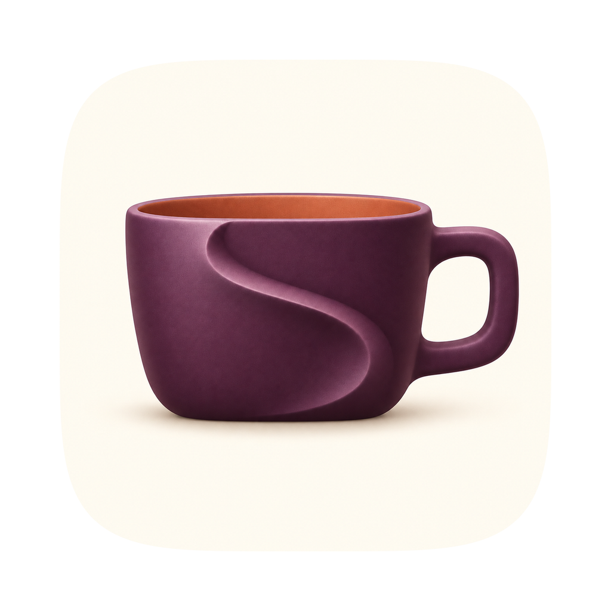

A little more awake.
Keep your Mac awake, precisely.
A small menu-bar app for the moments your Mac needs to stay awake. Choose a preset, decide when it ends, and get back to what matters.
Available after Apple approval.
- $2.99 once
- No subscription
- macOS 14 or later

Start and stop a session
Click the cup in your menu bar, choose a preset and an end time, then click Start. Mac Awake keeps your Mac awake when idle while allowing the display to sleep. Choose Mac + Display Awake when the screen needs to stay on, too. Click Stop to finish early; quitting Steady Cup also ends its session.
Open Steady Cup when you sign in
In Settings → General, turn on Launch at Login. If macOS asks for approval, use Open Login Items Settings to review it. Launch at Login opens the app; starting a session automatically is controlled separately by “Start the last preset when Steady Cup launches.” Both options are off by default.
Use a keyboard shortcut or Shortcuts
Choose a global shortcut in Settings → Automation. None is assigned by default, and no Accessibility permission is needed. For Apple’s Shortcuts app, create or edit a shortcut and search for Steady Cup when adding an action. Actions can start or stop a session, choose a preset, set a duration or end time, toggle, or get the current status.
Understand the limits
Steady Cup prevents the idle sleep you select. It does not promise to keep a MacBook awake with the lid closed, override a deliberate Sleep command or administrator policy, or change your status in messaging apps. Keeping the display awake uses more power. Battery safety controls are in Settings → Power & Safety.
For troubleshooting, include your macOS version, Steady Cup version, and what happened. You can choose Export Redacted Diagnostics in Settings → Advanced. Review the file before attaching it; please don’t send passwords or unredacted logs.
Privacy Policy
Your sessions stay on your Mac.
Updated September 20, 2026
The app
Steady Cup makes no runtime network requests. It has no analytics, telemetry, advertising, account, cloud sync, or remote crash-reporting service. Preferences and saved presets stay on your Mac. Power state and running-app information are used locally to manage the session you choose; the app does not keep a running-app history.
Diagnostics exports are created only when you ask. They redact home-directory paths and common secret assignments, and are never uploaded by the app. You decide whether to send an export to support. Links to this website or other help pages open in your default browser.
This website
This is a static website hosted on GitHub Pages. Our pages include no scripts, analytics, advertising, tracking pixels, forms, or third-party fonts. GitHub processes request information to deliver the site and logs visitors’ IP addresses for security, including when visitors are not signed in. See GitHub Pages data collection and GitHub’s Privacy Statement.
When you contact support
If you email support, we receive your email address, message, and any attachments you choose to send. We use that information to respond to your request. Please do not send passwords, financial information, or unredacted logs. For privacy questions or to request deletion of support correspondence, email help@sample.audio.
Terms
Simple by design.
Mac App Store purchases are governed by Apple’s applicable store terms and Standard Licensed Application End User License Agreement. We do not add a custom app license or subscription.
Steady Cup requests documented macOS power-management behavior. It cannot override closed-lid requirements, hardware limits, administrator policies, battery depletion, or behavior controlled by other apps and services. Save your work and choose session settings appropriate for your Mac. For support, contact help@sample.audio.